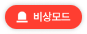
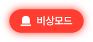
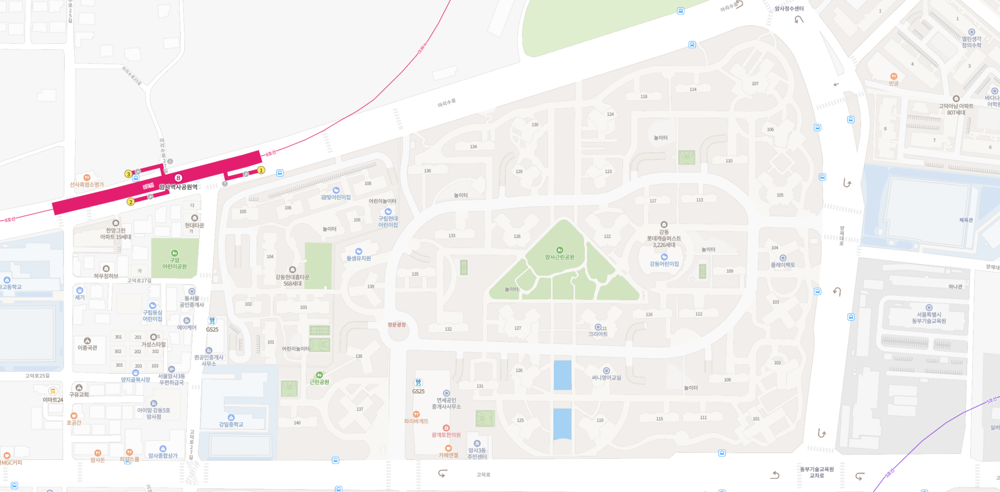
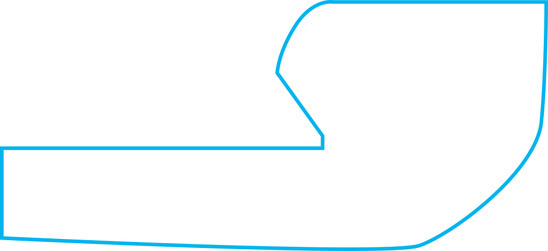
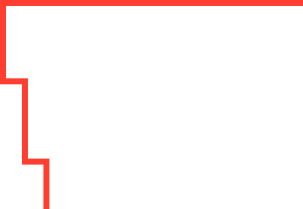
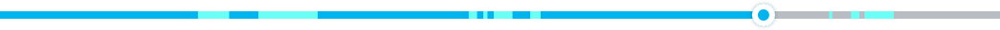
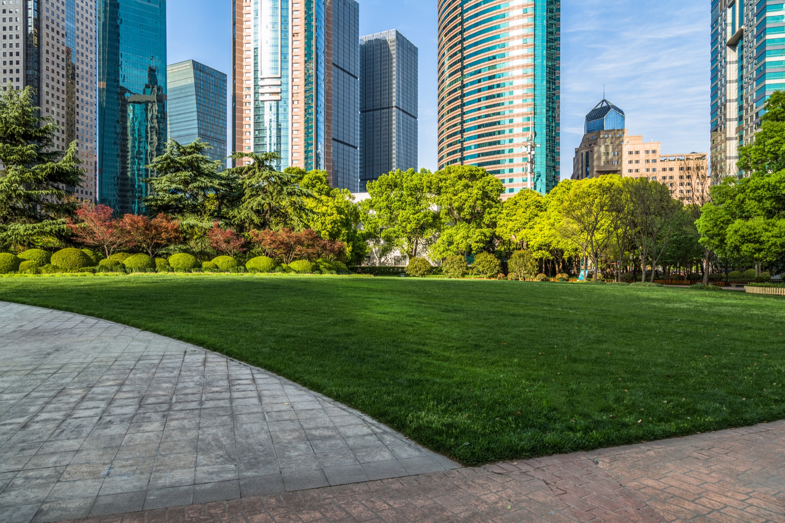
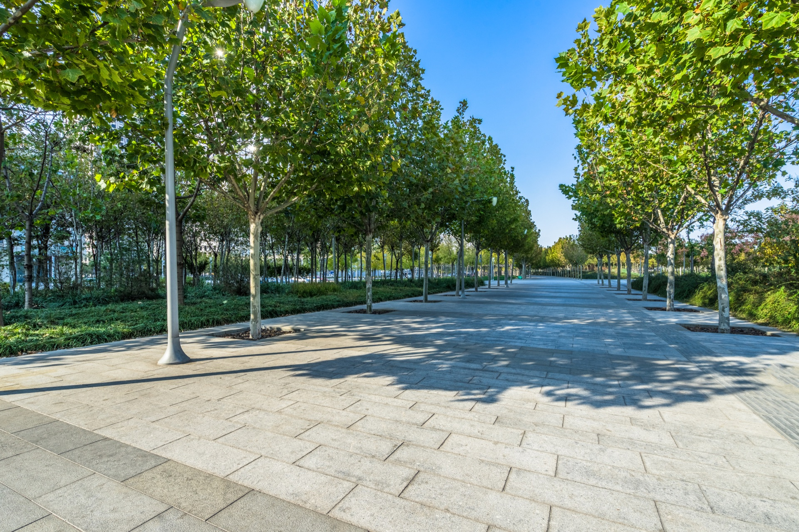
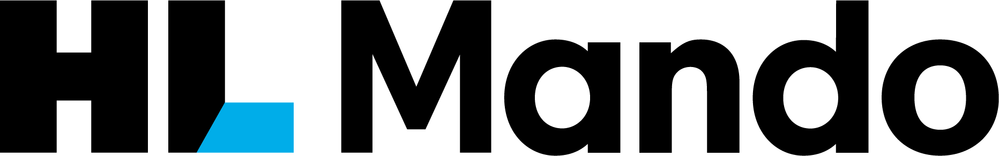

{{ rule.title }}
{{ rule.body }}
{{ overviewBody }}
{{ contractBody }}
{{ rule.body }}
{{ buildBody }}
{{ step.body }}
{{ coverageBody }}
| {{ layerHeader }} | {{ evidenceHeader }} | {{ targetHeader }} | {{ statusHeader }} |
|---|---|---|---|
| {{ row.layer }} | {{ row.evidence }} | {{ row.target }} | {{ row.status }} |
{{ stateModelBody }}
{{ axis.name }}{{ axis.values }}{{ axis.rule }}
{{ principlesBody }}
{{ principle.body }}
{{ principle.test }}{{ sourcePriorityBody }}
{{ source.body }}
{{ refColorsBody }}
{{ swatch.value }}{{ swatch.role }}{{ semanticBody }}
{{ color.token }}{{ color.rule }}
{{ contrastBody }}
{{ pair.value }}{{ pair.result }}{{ pair.rule }}
{{ typeBody }}
{{ type.token }}{{ type.use }}
{{ spacingBody }}
{{ space.token }}{{ space.value }}{{ space.use }}{{ shapeBody }}
{{ shape.token }}{{ shape.value }}{{ shape.use }}
{{ elevationBody }}
{{ level.token }}{{ level.use }}
{{ robotPanelBody }}
{{ robotPanelA11yBody }}
351:2119
{{ batteryBody }}
{{ battery.token }}{{ markerBody }}
{{ marker.state }}{{ audioSafetyBody }}
{{ audioStatusText }}
{{ emergencyContract }}


{{ inputSelectBody }}
{{ timeBody }}
{{ durationHint }}
{{ missionCardBody }}
{{ card.state }}{{ patrolPatternBody }}
{{ patrolContractBody }}
2226:13757 · 3874:44703


{{ videoPatternBody }}


{{ templateBody }}


{{ brandBody }}

header-logo.png · 230:2891{{ color.value }}230:2058{{ brandTypeMeta }}
2051:3017{{ brandSwapBody }}
{{ step.body }}
{{ brandGateBody }}
contrast · focus · forced-colors · 320px{{ buttonBody }}
{{ buttonA11yBody }}
351:2306 · 351:2435
{{ switchBody }}
{{ componentContractBody }}
{{ contract.axis }}{{ contract.values }}{{ contract.rule }}
{{ alertBody }}
{{ notificationBody }}
{{ modalBody }}
{{ modal.body }}
{{ scrollbarBody }}
{{ shellBody }}
{{ shellA11yBody }}
230:4018 · 230:3631
{{ shellStageBody }}
{{ toolbarBody }}
{{ handleBody }}
{{ handle.state }}